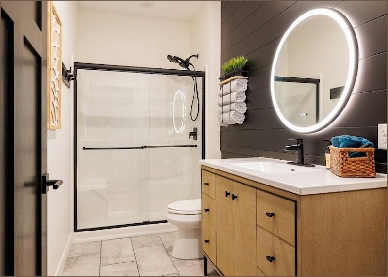

Brooklyn Park, MN
Keith's Finest Plumbing
The Relief Of A Home That Works
Round-the-clock plumbing in Brooklyn Park, from a burst copper pipe at 2am to a full tankless water heater conversion.
From Frozen Water Lines To Tankless Water Heater Installs
Keith's Finest Plumbing handles water heaters, water lines, gas piping, and full remodel plumbing for Brooklyn Park homeowners.
Water Heater Repair & Installation
Tank replacements, warranty diagnostics, and full conversions to on-demand tankless systems, usually completed same day.
Water Line & Leak Repair
Pinhole copper leaks, frozen and failed water service lines, and PRV or yoke assembly replacements at the meter pit.
Water Softener Installation
Whole-house softener systems installed and explained in plain terms, paired with a check on the rest of your plumbing.
Remodel & New Construction Plumbing
Full bathroom upgrades, gas line runs, new fixtures, and permit and inspection coordination for home renovation projects.

About Keith's Finest Plumbing
Keith's Finest Plumbing built its name in Brooklyn Park on the jobs that stump other plumbers: a bad weld hiding inside a brand-new water heater tank, a water service line frozen solid and buried in rock, a PRV that decides to fail on a Sunday morning. Cameron and Malachi run the trucks, and between them they've replaced pressure valves, converted homes to on-demand water heaters, run gas lines for stoves and dryers, and rerouted entire water services without losing a step.
What customers keep coming back to mention is the same handful of things: a real price before the work starts, techs who show up when they say they will, and a crew that treats the house like it's their own, drop cloths down, work areas swept, and a callback the same day if anything feels off after they leave. That kind of follow-through is how a plumbing outfit ends up sitting at 4.8 stars across 127 reviews instead of the usual mixed bag.
Recent work


What customers say
4.8 stars across 127 Google reviews.
We had a leak at the PRV in the meter pit outside our townhome, and the plumbing team handled the repair professionally and in a timely way. Cameron did excellent work, and when an unexpected issue came up with the yoke assembly during the PRV replacement, they quickly took care of it and got the needed part installed as soon as possible. While we were waiting, they kindly connected us to our neighbor’s outdoor faucet so we still had water to use, which was a big help. The office staff was friendly and easy to work with, and communication by phone was clear and helpful. Overall, we had a very good experience with this plumbing repair. If you need fast, high-quality plumbing service in Brooklyn Park and want a team that knows how to handle water line and pressure valve problems, I would recommend them.
$13
$14
$15
Cameron and his team were great to work with for our plumbing needs. They installed a new water heater and a whole-house water softener, and the work was clean, professional, and done right. Everything has been running smoothly, and the system has made a big difference in our home’s water quality and hot water supply. During the visit, Cameron also pointed out a few other plumbing items we may want to keep an eye on, which was very helpful. The pricing was fair, and they took time to explain the work in simple terms. Later on, we had an issue with the water heater that was not related to the installation, and they came out the same day to fix it at no charge. That kind of quick service and honest plumbing support is hard to find. This is a trustworthy plumbing company that stands behind its work, provides solid customer care, and handles repairs and installations with real skill. I would absolutely recommend them for water heater service, water softener installs, and general plumbing work.
My old water heater finally gave out, so I got a 50-gallon replacement. A couple of days after the install, it started leaking. After following the manufacturer’s steps and ordering a part that was expected to fix it, I scheduled warranty service through Keith's Finest Plumbing. Cameron arrived on time, checked everything carefully, and quickly found that the real problem was a bad weld on the tank, not the heating element. He clearly explained what was going on and helped make the next step easy. We returned the leaking unit for an exchange, and the whole process went much smoother because of his plumbing knowledge and professional service. I really appreciated the fast response, honest diagnosis, and helpful support. It was a very positive experience, and I would gladly use the service again and recommend it to anyone in Brooklyn Park who needs water heater or plumbing help.
After the big rain over Memorial Day weekend, i first thought rainwater was getting into the house. After checking more closely, i found a small pinhole in a copper water pipe, and it had been leaking all night with a lot of water on the floor. I was worried i would not find a plumber available that weekend, but Keith's Finest Plumbing was able to help. cameron gave me a clear arrival time and even showed up early. He came prepared with the right plumbing tools and parts, found the leak fast, and repaired the copper pipe quickly. The whole process was smooth, professional, and much more affordable than i expected. It was a big relief to get the water leak fixed so fast and avoid more damage.
$16
We had an ongoing plumbing problem with our second tank, pump, and float, and the system kept getting close to overflowing and backing up. After dealing with it for a long time and not getting a real fix, we decided to call for a second opinion. Cameron and Malachi came out, carefully checked the system, explained what was going on in simple terms, and worked hard until everything was repaired the right way. They were respectful, friendly, and very knowledgeable, and they made the whole service visit much less stressful. It was clear they knew plumbing and pump system work well, and they took the time to make sure the issue was fully solved instead of doing a quick temporary fix. We really appreciated their honesty, clear communication, and attention to detail. We would gladly recommend them and will absolutely call them again for any future plumbing service needs.
About 10 days after closing, what looked like a small faucet drip turned out to be a much bigger plumbing leak behind it. I called another plumber first and was shocked by the quote. Then my agent noticed this plumbing company, and that ended up being the right choice. Cameron arrived early, quickly figured out the best repair, and explained the plumbing issue and fix in simple terms. The estimate was about 400 less than the other plumber. He stayed on the job while we picked up a needed part, waited, and finished the repair that same afternoon. Plumbing work is never cheap, but compared to the other quote, this was a much better value. I really appreciated the fast response, clear communication, and solid work, and I would gladly recommend them for faucet leaks and other plumbing repairs.
Common questions
Do you actually come out at night or on weekends?
Yes. We run 24 hours a day, every day, and we've handled everything from Memorial Day weekend pipe bursts to Sunday morning water heater failures.
Can you convert my old tank water heater to a tankless system?
Yes, we handle full tankless conversions including the venting and gas line work, usually finishing the install in about three hours.
I'm remodeling and need permits pulled, can you manage that?
Yes, we handle permitting, final inspections, and coordinating with your other contractors so the plumbing side of your remodel stays on schedule.
Get in touch
Call or text and we will get back to you.
Hours
HoursAll hoursHide
| Monday | Open 24 hours |
|---|---|
| Tuesday | Open 24 hours |
| Wednesday | Open 24 hours |
| Thursday | Open 24 hours |
| Friday | Open 24 hours |
| Saturday | Open 24 hours |
| Sunday | Open 24 hours |